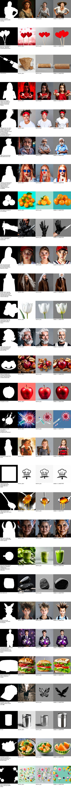
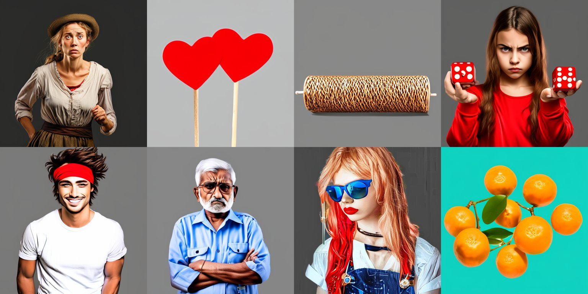
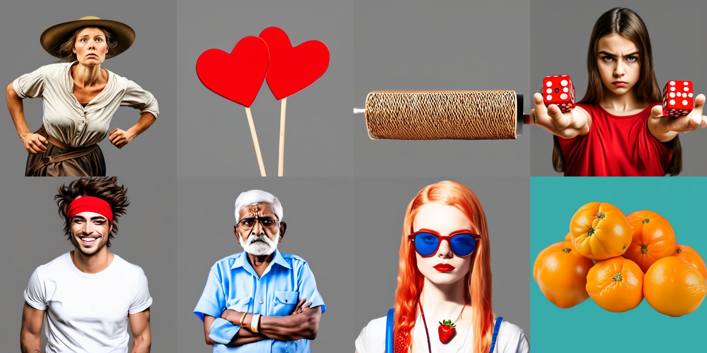

The plan separates two things: what MAGICK looks like (gray background, dated style) and how to follow a matte. The first model, the adapter, learns the first one. It sees only captions, no matte. This borrows the idea of AnimateDiff's domain adapter [AnimateDiff]: a model soaks up the data's domain, so that a later control model does not have to.
| model (20 steps, CFG 4.5) | exterior gray error | border gray error | foreground fraction | IoU vs matte |
|---|---|---|---|---|
| teacher, plain caption | 0.329 | 0.339 | 0.988 | 0.369 |
| teacher, caption + gray suffix | 0.181 | 0.189 | 0.945 | 0.382 |
| adapter, step 1000 (Checkpoint 1) | 0.113 | 0.099 | 0.531 | 0.524 |
| adapter, step 2000 | 0.090 | 0.077 | 0.492 | 0.542 |
| MAGICK reference (sanity check) | 0.002 | 0.036 | 0.372 | 0.983 |
Means over the 29 eval images, one fixed noise each, 20 steps, CFG 4.5. The adapter never sees the matte, so IoU here is not a result: it moves because the foreground fraction (pixels that are not gray) falls from 0.99 to 0.49–0.53, which is closer to the reference's 0.37. Exterior error stays above the border error because the generated object also lands outside the true matte. A border error of 0.077 is still twice the reference's 0.036: some captions name a background color ("mandarins on a turquoise", "flowers ... on pastel"), and the adapter obeys them. Raw numbers: step 1000, step 2000.
Each row is one eval caption. Columns: the matte (unused here), the stock teacher with the plain caption, the teacher with "on a plain 50% gray background" added, and the adapter at step 1000.

The trainer draws the same 8 captions with the same noise every 250 steps (the first eight eval captions). Left: step 250. Right: step 1000.


src/sana_alpha/train_adapter.py, train_objective.py; run log: agents/.scratchpad/logs/train_adapter_adapter_v1.log.